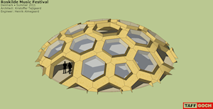
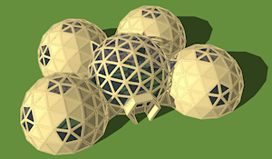

Sketchup 3D Geodesic Models
Google Sketchup is probably the best tool you could ever learn to use for 3D models, especially geodesic domes. It is free of charge (there is a Pro version available), it is pretty simple and fun to learn, but most of all it’s the contribution of of models to the community that makes it stand out.
There are many dozens of geodesic dome models available created with Sketchup and here we list 70+ of these. You can view them in 3D and rotate them with a drag of the mouse. You can resize them for your needs and colors can be added to anywhere.
And don’t forget the plugins: there is a large number of free plugins for many applications in addition to premium ones you pay for.
A stellar standout in contriibutions is the extensive work by TAFF GOCH. There is no one that can rival the models he offers to the public as well as a solid involvement in discussion forums, mainly Google’s discussion forum. Click on the logos below to see TAFF GOCH’s entire collection of 3D models at Google’s 3D warehouse and artwork at DeviantArt.
| Tutorial – How To Make a Dome | Beginning modelers might not know how you can use a dome, but who knows? Maybe you could use one in a 3-hole punch if you get really good at SketchUp! So if you want to try and make one of those, learn how to make, well, the basic idea of about 6 parts of a 3-hole punch (SketchUp wise), in this tutorial! See the Google Sketchup 3D warehouse details |
| Geodesic Dome Home | This is a Geodesic dome home with Geodesic dome garage. See the Google Sketchup 3D warehouse details |
| Geodesic Dome 4V Hemisphere | Geodesic dome. By request. Based on icosahedron. 4V (4-frequency; each edge of the icosahedron is divided into 4 segments, or struts – also known as ‘chord factors’). Class I division method. The radius of this dome is 1 foot (unit radius). The model can be scaled-up to the desired size using the SketchUp ‘Scale’ tool. (Use the <ctrl> and <shift> keys while using the scale tool). See the Google Sketchup 3D warehouse details page |
| Greenhouse Inclined Oblate Geodesic Dome | Dome greenhouse. Polyhedral basis: Icosahedron. Geodesic tessellation: Class-I. Frequency: 4v. Squashed oblate spheroid scaling ratio is the Golden Ratio. Oblate spheroid is inclined to face the sun, and is oriented to face south (in the northern hemisphere). Footprint: ~1,000 square feet. Footprint diameter: ~39 feet. Peak height: ~17 feet. Thermal mass provided by water tanks, to moderate interior temperature (can also serve double-duty, to raise fish or floating plants).Glazing is composed of ultraviolet-transparent Dupont Tefzel ETFE thin-film pillows (as used on The Eden Project domes). Frame is metal pipe/tubing/conduit. See the Google Sketchup 3D warehouse details page |
| Geodesic Tent Dome | Geodesic Tent Dome. Based on truncated icosahedron. 3V (3-frequency; each edge of icosahedron is divided into three).Only 2 triangle sizes. Tent is tension-suspended from metal-conduit frame. Metal or wood disks distribute load forces to prevent tearing. Tension adjusted with threaded rods through disks (rope or chain could be used instead of rod – chain was used in original Fuller design). See the Google Sketchup 3D warehouse details page |
| Plywood dome | Roskilde Music Festival. Denmark. Summer 2011. Architect: Kristoffer Tejlgaard. Engineer: Henrik Almegaard. Interior floor diameter: 56 feet. Interior floor space: 2467 square-feet. Interior height: 12 feet. Entrance headroom: 6¼ feet.Photos, and wonderful YouTube video available, showing the construction & assembly. See the Google Sketchup 3D warehouse details page |
| Conduit Geodesic Dome | Geodesic dome composed of metal electric-conduit tubing. Playdome, ready for your backyard (or Burning Man). Ends are smashed and drilled for bolting together. Based on icosahedron. 3V (3-frequency; each edge of the icosahedron is divided into three). Only 2 triangle sizes. 105 triangles. 30 triangles define pentagons. 75 triangles define hexagons. 30 red struts. 80 green struts. 55 blue struts. 165 total struts. 61 bolt/nut sets for vertices. See the Google Sketchup 3D warehouse details page |
| Self-Deployable Parabolic Dome | This version of parabolic dome features hexagonal tensegrity blocks (see link) each consisting of six hinged strut pairs radiating from the center (each pair only opens roughly along one plane), inelastic tendons comprising the top and bottom hexagons, and criss-crossing tensioning tendons on the sides.The tensioning tendons could be: a) inelastic tendons connected to micro-winches that tighten them to desired lengths and tensions, b) memory metal that shrinks when current is applied to proper lengths and tensions, or c) elastic tendons with inelastic riders that lock into place after the dome self-deploys.See the Google Sketchup 3D warehouse details page |
| Oblate Geodesic Dome | Oblate spheroid dome, built by Carey Smoot. Icosahedron tessellation: Class I, method 1. Frequency: 4v. Vertical (z) scale factor: 0.618 (“Golden Section”). See the Google Sketchup 3D warehouse details page |
| Miami Seaquarium Gold Dome | Geodesic canopy & skybreak at Miami Seaquarium. Geodesic tessellation: Class-II (‘triacon’). Frequency: 10v. Subdivision method: Temcor (D.L.Richter). Diameter: 146 feet. Height: 55 feet. Manufactured by Temcor, Inc. Dedicated in 1960, by Buckminster Fuller. See the Google Sketchup 3D warehouse details page |
| Ford Building Rotunda Geodesic Dome | Installed over the circular atrium of the Ford building, in Detroit, Michigan. 1953. Incorporates aluminum octet trusses to further reinforce the primary planar triangular panels.Icosahedron tessellation. Class I. Frequency 4v. Aluminum frame covered with translucent plastic panels. Designed, and construction supervised, by Richard Buckminster Fuller. Building totally destroyed by fire, in the winter of 1962, caused by workers resealing leaking seams on the dome, using flammable sealant (tar compound). See the Google Sketchup 3D warehouse details page |
Geodesic Dome Egg-shaped |
Applying a SketchUp plugin to modify a spherical geodesic sphere, to produce an egg-shaped geodesic dome. Geodesic sphere/dome frequency: 6v. Icosahedron tessellation: Class I. Vertex distribution (initial spherical geodesic): Electrostatic-charge repulsion. See the discussion (click on logo) to read more about the applied SketchUp plugin. See the Google Sketchup 3D warehouse details page |
| Dali Museum Geodesic Dome | Glass geodesic dome, on the roof of the Salvador Dali museum, in Figueres, Catalonia. Glass dome is a Class-I, frequency 12v geodesic, 3/4 sphere. The “exoskeleton” is a Class-I, frequency 6v geodesic, 3/4 spherical frame. See the Google Sketchup 3D warehouse details page |
| Geodesic “Diamond Domes” | Geodesic domes, having their triangular faces further sub-divided into tetrahedral “triplets”. Spaceship Earth, at Disney World (Epcot) in Orlando, Florida, is an example of a “diamond dome”. The most-popular geodesic subdivisions are provided. Frequency: 3v, 4v & 5v. Icosahedron tessellation: Class I. Insphere vertex distribution method: Electrostatic-charge repulsion. Each tetrahedral-triplet “face” approximates one-fourth of an equilateral tetrahedron (by volume). Each dome is a separate component. The insphere radius of each dome is 1 foot (unity). Use the SketchUp ‘Scale’ tool, or the ‘Measuring tape,’ to enlarge the dome in your architectural model.See the Google Sketchup 3D warehouse details page |
| Greenhouse Dome | This model could be used to build an acquaponics dome, Hydroponics dome etc. The transparent side of the dome should either face south or north, being combined with reflectors depending on the climate. some form of ventilation would have to be provided. See the Google Sketchup 3D warehouse details page |
| Geodesic Frame | Frame struts constructed by use of ‘offset’ and ‘push/pull’ tools. Hubs and strut-backsides completed by hand-stitching. Geodesic division of Icosahedron, Class I, 4-frequency (4v), Division method 1. See the Google Sketchup 3D warehouse details page |
| Geodesic Dome Foundation Comparison | When choosing a geodesic subdivision method for a dome, the ground truncation can be problematic. Two subdivision methods are compared, in this model: Class-I, 3v, Method-1 (tan), vs. (blue) Class-I, 3v, Method-Kruschke (David Kruschke, “Dome Cookbook of Geodesic Geometry”, 1972). Method-1 subdivision produces three chord factors, and dome truncations at the 4/9ths & 5/9ths levels produce a ground, or foundation, tier of struts that do not lie flat on the ground. Kruschke’s Method produces four chord factors, and the ground tier of struts is level, lying flat on the ground, without any additional modifications to the geometry. This makes a Kruschke 3v dome easier to build, as the foundation is level. The four chord factors are more divergent than the typical Method-1 chords, but the differences are minor. The radii of the domes/spheres are unity (1.0), so chord factors can be measured directly from this model, as can face, dihedral and central angles. See the Google Sketchup 3D warehouse details page |
| Montreal Biosphere | Final geodesic configuration. The Biosphère, as built, after truncating to a 3/4 dome. Geometry, from the equator down, is modified to provide struts parallel to the ground.This modification, or debasement, of the true geodesic configuration, allowed the 3/4 dome to sit flat on the foundation. The Biosphere was originally built for the 1967 World Exposition, as the United States pavilion, designed by Richard Buckminster Fuller and architect, Shoji Sadao.The Biosphere dome is 250-feet in diameter and 200-feet tall. The outer shell (blue) is a 16-frequency, class I tessellation of the icosahedron. The inner shell (red) is a 32-frequency, class II icosahedron tessellation. The struts in-between (yellow) connect the inner and outer shells, producing a unified tetrahedral-truss structure. See the Google Sketchup 3D warehouse details page |
| Geodesic Dome Cluster | Greenhouse central dome. Total footprint area, 1800 sq.ft. Central dome, 17′ peak height, peripheral domes, 13′ peak height.Each dome is 3V (3-frequency) geodesic division of icosahedron. Each dome, 11′ radius. One reviewer can’t believe this was modeled in SketchUp, and must therefore be an import • High praise, indeed. See the Google Sketchup 3D warehouse details page |
| Geodesic Dome 3V | Geodesic dome based on icosahedron. 3V (3-frequency; each edge of the icosahedron is divided into three). Only 2 triangle sizes. 105 triangles. 30 triangles define pentagons. 75 triangles define hexagons.The radius of this dome is 1 foot (unit radius). The model can be scaled-up to the desired size using the SketchUp ‘Scale’ tool. (use the <ctrl> and <shift> keys while using the scale tool). Note that bottom-most level of edges do NOT lie flat on the same plane.This is a common characteristic of this geometric division of the icosahedron (odd frequencies). If desired, the slightly-elevated vertices can be dragged down to lie on the same plane, but this will change the sizes of the triangles on the bottom tier, introducing additional triangle configurations (i.e.; you’ll no longer have just two sizes of triangles). See the Google Sketchup 3D warehouse details page |
| Temcor Geodesic Dome Geometry & Construction | This model depicts Temcor, Inc. geodesic dome triangular tessellation. Ascertained from Antarctic diagrams and photographs. This geometry was/is used in the Antarctic dome (U.S. National Science Foundation); i.e., the Amundsen-Scott South Pole Station (deconstructed 2009-2010).14 chord factors (nine-decimals) provided, along with apex and footprint-radius factors. Temcor colorchart included (1974, Antarctic dome). Model depicts dome of 1-unit sphere radius. Five scenes provided, to show the flat-panel dome (Antarctica-style), the triacon basis, the V-beam panel style (color-coded & monochrome,) and the color-coded chord factors (shared by both styles of dome). See the Google Sketchup 3D warehouse details page |
| Synergetics, Inc Geodesic Dome | Suspended tent. Circa, September 1962-63. 120-foot diameter. 44-foot height. 8-foot vertical-clearance gap at base. 3 aluminum tube struts. 10 aluminum hubs. 4×8 aluminum I-beam base-ring. 4 aluminum tube legs. Canvas tent. This design was used for the Ford Pavilion, at the 1962 World’s Fair, in Seattle, Washington. See the Google Sketchup 3D warehouse details page |
| Tensegrity Block Parabolic Dome | Tensegrity Blocks consist of hinged struts radiating from a central node and tensioning cables (see link). In this version of my parabolic dome posted earlier, a truss of hexagonal and triangular blocks supports plates of sandwiched UV-resistant polycarbonate plastic, aerogel, and liquid crystal layers. Some of SketchUp’s autosurfacing has been left in for visual interest. See the Google Sketchup 3D warehouse details page |
| Kerr Activities Center Dome | Geodesic dome of the Kerr Activities Center (roof & apron-wall only – not the complete building). East Central University. Ada, Oklahoma. Built in 1974, by United Builders (of Shawnee, Oklahoma) at a cost of $859,460.The Kerr Activities Center was named in honor of ECU alum, Oklahoma governor and U.S. senator, Robert S. Kerr. Aluminum dome roof manufactured by Temcor, Inc.. V-beam panel construction (Donald L.Richter, inventor).Geodesic tessellation: Class I. Frequency: 14v (bottom 2 rows truncated, making it appear to be a 12v tessellation). Identical Temcor dome geometry is used at Mississippi College, Elmira College (NY) and Centenary College (LA), to name just a few.Google Sketchup 3D warehouse details page |
| Kerr Activity Center | The Kerr Activity Center, better known as the Kerr Dome, is a local landmark. Within it’s geodesic structure are three levels of seating, classroom, and activity area. The lower level contains the basketball court on which the Tigers play.See the Google Sketchup 3D warehouse details page |
| Geodesic Wood-framed Greenhouse. Kruschke | By 3-frequency, class-I icosahedron dome. Triangular subdivision method devised by David Kruschke from the Dome Cookbook of Geodesic Geometry 1972.Wood plank frame, hollow polycarbonate sheet used for glazing panels.Scaled to provide a 30-foot diameter footprint. Miter-saw angles provided for the plank cuts, at vertices.See the Google Sketchup 3D warehouse details page |
| EPCOT The Land Geodesic Dome | Greenhouse dome, of Disney’s Epcot pavilion, The Land. Unusual seven-fold radial symmetry. Five-frequency subdivision. Dome appears to be of Temcor, Inc.See the Google Sketchup 3D warehouse details page |
| Dietrich Activity Center
|
Walla Walla Community College. Walla Walla, WA. Established, 1967. Dietrich Activity Center was originally the Chinese Pavilion at the 1974 Spokane World’s Fair. After the Fair, it was disassembled, trucked to Walla Walla, and reconstructed. Locally, it is known as either the Dietrich Dome or the China Dome. Geodesic v-panel roof manufactured by Temcor, Inc.See the Google Sketchup 3D warehouse details page |
| Geodesic Catalog. Class III | Google Sketchup 3D warehouse details page |
| Geodesic ‘Fly-Eye’ Dome | Geodesic Fly-eye dome. Based on icosahedron. Class II division. 6V (6-frequency). Complete sphere composed of only two unique components: 60 triangular convex dished faces & 32 transparent bubble skylights.See the Google Sketchup 3D warehouse details page |
| Diamond Dome | Geodesic Diamond Dome. Based on icosahedron. Model shows progression from truncated-icosahedron (buckyball,) to 3V (3-frequency) geodesic dome, to diamond dome. NOTE: Model demonstrates edge style using ‘material’ color, rather than solid black — setting can be found in ‘Style’ window.See the Google Sketchup 3D warehouse details page |
| Permaculture Chicken Dome | The Permaculture Chicken Dome is one of the best known & finest examples of a multi-functional Permaculture design element. Usually incorporated into a rotational circular garden bed system, with a minimum of three beds, this popular Permaculture design feature constantly produces high yields whilst increasing soil fertility.See the Google Sketchup 3D warehouse details page |
| Geodesic Pavilion Tent | Geodesic Pavilion. Canvas tent on 2×4 wood frame. 4V (4 frequency) dome. Class-I icosahedron tessellation. Vented at top. Ground ‘footprint’ covered by canvas: 44-foot diameter ~ 1,500 square feet. Longest 2×4: 8 feet. Height at center: 18 feet. Headroom at entries: 6 feet – 9 inches. 190 2×4 struts. 61 ‘hubs’. 255 square-yards fabric.See the Google Sketchup 3D warehouse details page |
| San Diego Childrens Zoo Geodesic Pavilion | Clark Theater. Dr. Zoolittle presentations. Roof “panels” are made of canvas. When originally built, the roof triangles were stellated; made of plywood (Old roof included in its own hidden layer). Geodesic subdivision of icosahedron. Frequency 4v. Class I tessellation.See the Google Sketchup 3D warehouse details page |
| Spaceship Earth Epcot Geodesic Sphere | Disney World. Orlando, Florida, USA. Geodesic tessellation of icosahedron. Class II. Frequency 16v. Division: Electron-charge repulsion. Model depicts the geometry of the sphere of Spaceship Earth (foundation support structure not included). Sphere is ready for use as a component in your model of the complete facility. Radius of model is 1 foot (unity). Use SketchUp ‘Scale’ tool to enlarge the sphere in your model.See the Google Sketchup 3D warehouse details page |
| RADOME Radar Dome | Geodesic radome manufactured by AFC (Antennas for Communications). Used for weather protection of radar and radio-astronomy installations.While geodesic, an irregular tessellation method is employed. The geometry of an individual radome panel could cause radio-scattering errors at certain frequencies. If the radome were constructed of repeated regular panels, the error would be compounded.To ameliorate the problem, this AFC radome utilizes a “pseudo-random” panel design. This model is of unit radius (1.0). Scale to the size needed for your model.See the Google Sketchup 3D warehouse details page |
| Geodesic Dome Truss | Tetrahedral truss for geodesic dome. Based on icosahedron. 10V (10-frequency). Unit radius of 1-foot. Primary component groupings are on separate layers to facilitate visualization ~ turn layers ON/OFF to view.Can be used to construct geodesic dome or sphere. This model was inspired by, and is derivative of the geodesic truss described at the former ‘TekCAD’ website.See the Google Sketchup 3D warehouse details page |
Geodesic Roof Profiles |
Geodesic dome altitude (roof ‘profile’) is not restricted to full icosahedral faces • By using a higher-frequency tessellation, deleting outer row(s) of triangles, and scaling-up the result, the ‘bulge’ of the spherical roof can be effectively reduced • (Turn on ‘guides’ to see the deleted rows) •Here are four samples of the apparent effect, including some examples from the real world • Each of the example photos is a Kaiser/Temcor dome (D.L.Richter, inventor) built in the United States in the last 50 years • Kaiser no longer builds such roofs, but Temcor (Richter’s company) has become the most-successful manufacturer of aluminum dome roof structures in the world, having built several hundred domed stadiums/auditoriums.One of the included photos is of the historic (Kaiser-built) Valley National Bank in Tempe, Arizona, which was demolished last year • The roof was salvaged by Arizona State University, which plans to renovate the parts and reconstruct it on campus • The other three domes: Centenary College (LA,) Dinosaur State Park (CT) & the Kingsland ‘park & ride’ bus shelter in Houston, TX.See the Google Sketchup 3D warehouse details page |
| Geodesic Dome Garage | Geodesic Dome Garage.See the Google Sketchup 3D warehouse details page |
| Geodesic dome 01 | A dome, or half sphere, composed of triangles arranged on geodesic rings around the circumference, low polygon.See the Google Sketchup 3D warehouse details page |
| F4 Geodesic Dome – 24 Ft. Dia. | This is a wood frame, 2×6, model of a 24 foot diameter icosahedral geodesic dome with plywood sheathing. Openings for doors and windows will be added later.See the Google Sketchup 3D warehouse details page |
| Geodesic Dome for Virtual Expo Shanghai | Domo geodésico y diseño interior para evento de Pabellón Virtual de Expo Shanghai.Google Sketchup 3D warehouse details page |
| Geodesic Dome Lean-to | Geodesic Dome Lean-to.See the Google Sketchup 3D warehouse details page |
| Geodesic “Shell” Structure | Help Group discussion • By request • Construction of an internal geodesic frame for a shell structure • Geodesic tessellation is not strictly based on icosahedron • Primary shape is a 120-degree section cut of a sphere • Triangulation is a customized distortion of icosahedral tessellation • More information available at the Geodesic Help Group discussion (click model logo). Google Sketchup 3D warehouse details page. . |
| Pool Dome | Pool Dome.Google Sketchup 3D warehouse details page. |
| Conduit Hub | Geodesic dome. Conduit frame. Hub ends. ‘Smashed’ construction. For child’s geodesic climbing dome, or geodesic tent frame. Sharp edges should be filed round. When stacking ends, care should be taken to ensure that the ‘sharp’ edges point downward. Always arrange the downward pointing end on the top of the ‘stack’. This will reduce the chance of injury.Google Sketchup 3D warehouse details page |
| Amundsen-Scott South Pole Station | In Memoriam • 1975-2009 • “Station75″ • Geodesic dome of the United States NSF (National Science Foundation) South Pole research station • Latitude:89.99998°S / Longitude:164.3°E • Dome constructed, 1971-1975, by U.S. Navy Seabees (CB:Construction Battalion) • Manufactured by Temcor, Inc. (Donald L. Richter) • “Deconstructed” during the austral summer of 2009-2010 • Crated parts were shipped to California, to be archived and (partially) installed as a display in the new U.S. Navy Seabee museum at Port Hueneme, CA • Goodbye, old girl ….Google Sketchup 3D warehouse details page |
| Geodesic Great Circles | The 31 “great circles” of the icosahedron • Utilized by Richard Buckminster Fuller, for his early geodesic dome derivations • For further description, see the online book, “Buckminster Fuller: Anthology for the New Millenium,” edited by Thomas Zung.Google Sketchup 3D warehouse details page. |
| Geodesic Polyhedron • Goldberg/Clinton | Group discussion • Goldberg-Polyhedron/Clinton-Conjecture • Regarding Clinton conjecture about Goldberg polyhedra and equal-edge lengths • Geodesic statistics are included in the model • This particular model depicts one of the simplest Goldberg-Clinton conjecture polyhedra • Based on icosahedron • Click on model logo to read group discussion.Google Sketchup 3D warehouse details page. |
| Equal-edge Goldberg Polyhedron | Group discussion • “Pseudo” dual of 3-frequency, Class-I, geodesic tessellation of an icosahedron • Each edge is of equal length • Radii of vertices-to-sphere-center vary slightly to achieve planar faces • Click on model logo, to read “Dome Living” Yahoo! group discussionGoogle Sketchup 3D warehouse details page. |
| Snub Lattice • 7v | Geodesic sphere • Polyhedral basis: Icosahedron • Geodesic tessellation: Class-I • Frequency: 7v • Subdivision method: Electrostatic repulsion.Google Sketchup 3D warehouse details page. |
| Hex-Pent Geodesic Sphere/Dome | Dual of an icosahedron tessellation; 3-frequency, class-I, method-buckyball • Ground-plane truncation slice provided (in its own layer,) which would make a convenient, attractive ground level for converting the sphere into a dome. Google Sketchup 3D warehouse details page. |
| Worm Weave | Geodesic ball • Polyhedral basis: Icosahedron • Only two “worm” component definitions; “pentagonal” (12 blue) and “hexagonal” (6 red, 6 orange, 6 yellow, 6 green & 6 magenta) • Sinusoidal weave of the “worm” components produced with the “Follow me” tool • “Follow me” path produced “by hand,” employing mirror & rotational symmetries, on the surface of a geodesic sphere “template”. Google Sketchup 3D warehouse details page. |
| Worm Weave Basis | Progression of steps to create the sinusoidal loops for the “Worm Weave” model • Blue loops are based on circles • The other 5 colors are based on elliptical loops • The sinusiodal “follow-me” paths are built on these circles & ellipsi • Complete instructions are not provided • Prerequisite skill of being able to rotate entities/components, around any axis, is necessary • (You need to master this rotation skill, anyway, to be good at SketchUp modeling). Google Sketchup 3D warehouse details page. |
| Geodesic Weave Sphere | Tubing, rope or cable, woven into a geodesic ball • Not one length of tubing, but six quadruply-wound “loops” • Template for weaving is a geodesic sphere • Class III subdivision of an icosahedron • Frequency 10v(4,6) • Development of the sine-wave “Follow me” path is depicted in a hidden layer • Underlying geodesic sphere and “template” are also provided in their own hidden layers • The information in the hidden layers depict how the sinusoidal weave was created • The black background and distance fade-to-black is accomplished with SketchUp’s “Fog” window/gadget. . Google Sketchup 3D warehouse details page. |
| Geodesic Rattan Weave | Woven rattan ball, based on geodesic division of an icosahedron • Class III tessellation • Frequency 9v(3,6) • The geodesic sphere used as a template is also provided in the model • For additional information on the geodesic division, see the models: “Geodesic Library • Class III” and “Geodesic Library • Tessellation”. Google Sketchup 3D warehouse details page. |
| Clinton Conjecture Geodesic sphere | Group discussion • Goldberg-Clinton Conjecture • Regarding Clinton conjecture about Goldberg polyhedra and equal edge lengths • Geodesic statistics are included in the model • This particular model depicts one of the simplest Goldberg-Clinton conjecture polyhedra • With the included (hidden line) chords, this polyhedron can be used as a geodesic sphere • Class-II tessellation • 4v frequency • Based on icosahedron • No method of subdivision previously documented [verify] • Click on model logo to read group discussion. Google Sketchup 3D warehouse details page. |
Geodesic Two-layer Sphere, Inverted  |
Companion model to “Geodesic • Two-layer Sphere” • c554e1af29f0757bbb8627f7da72a40a • This version has the pentagonal/hexagonal frame (2,5) outermost, and the triangular frame (1,3) on the inside • Otherwise, the geometry, and descriptive text is the same.Google Sketchup 3D warehouse details page. |
The Seed • Eden Project  |
Peter Randall-Page’s 70-ton granite sculpture, displayed in the central atrium of The Core, at The Eden Project, Cornwall, UK • This model mathematically approximates the geometric layout of the nodule positions, using Excel spreadsheet-calculated data, imported into SketchUp • The SketchUp plugin, “cloud V6″ was used to import guidepoints, and to place nodule components at those locations • The nodules are depicted, using small proxy spheres, of equal diameter • To represent smaller-and-smaller nodules, as they approach the peak, the equal-size nodules of the model are gradually “sunk” into the surface of the egg-shape, to appear as smaller lumps on the sculpture • For geometric background information, online-search for “Fibonacci spiral,” and “phyllotaxis” • The rotation angle used in the spreadsheet, to calculate the positions of the nodules, very-closely approximates the “Golden Angle,” related to phi, the “Golden Ratio”.Google Sketchup 3D warehouse details page. |
| Geodesic Catalog • Class I | Geodesic Division of Icosahadron • Class I Tessellation Grid • Model revised, 15 September, 2010 • Methods 1 & 2 described in “Domebook 2″ • Method “repulsion” vertices are ‘optimized’ on the surface of the sphere, using an electron-charge repulsion algorithm (search online for “Thomson problem”) • Method “Mexican” is attributed to Professor Hector Hernandez, University of Sonora • Frequencies 1 & 2 are the same for all methods • Frequency 3, “Mexican” is the same as frequency 3, method 2 • Class I division is also referred to as ‘alternate’ division • Spheres are 1-foot radius • Use ‘scale’ tool to increase to dome size desired • Center guidepoint added to each sphere • See cross-reference model, “Geodesic Catalog – Tessellation” for definition and derivation of classes.Google Sketchup 3D warehouse details page |
| Geodesic Catalog • Class I • High Frequency | Geodesic Division of Icosahadron • Model revised 31 March, 2008, to more uniformly distribute vertices • Vertex positions were ‘optimized’ on the surface of the sphere, using an electron-charge repulsion algorithm (search online for “Thomson problem”) • Class I Tessellation Grid • Frequencies 10-through-16 • Spheres are 1-foot radius • Use ‘scale’ tool to increase to dome size desired • See cross-reference model, “Geodesic Catalog • Tessellation” for definition and derivation of classes and frequencies.Google Sketchup 3D warehouse details page |
| Geodesic Catalog Class II | Geodesic Division of Icosahadron. Class II Tessellation Grid. Includes all common subdivision methods. Frequencies 2-through-8. Class II division is also referred to as ‘triacon’ method, based on the triacontahedron. Spheres are 1-foot radius. Use ‘scale’ tool to increase to dome size desired. NOTE: Only frequency multiples of 2 apply in Class II tessellation.Google Sketchup 3D warehouse details page |
| Geodesic Catalog Class II High Frequency | Geodesic Division of Icosahadron. Model revised 31 March, 2008, to more uniformly distribute vertices. Vertex positions were ‘optimized’ on the surface of the sphere, using an electron-charge repulsion algorithm (search online for “Thomson problem”). Class II Tessellation Grid. Frequencies 10-through-16. This class division method also referred to as ‘triacon’ method, based on the triacontahedron, rather than the icosahedron. Spheres are 1-foot radius. Use ‘scale’ tool to increase to dome size desired. NOTE: Only frequency multiples of 2 apply in Class II tessellation.Google Sketchup 3D warehouse details page |
| Geodesic Catalog Class III | Geodesic Division of Icosahedron. Class III Tessellation Grid. Frequencies 3-through-9.Class III geodesic tesellation is seldom used, and if you really have the need, Class III data can be almost impossible to find. Some of the 16 geodesic spheres in this model appear identical, but are indeed different. Class III geodesic tesellations exhibit various degrees of twist, or ‘skew’ to the faces. A map is provided for each sphere, demonstrating the difference between spheres. Class III geodesics are also ‘chiral,’ meaning the rotated symmetry can be either right-handed or left-handed. This model only shows one direction of twist. If you need the opposite twist, SketchUp’s ‘scale’ tool can be used to mirror the sphere. Spheres are 1-foot radius.Google Sketchup 3D warehouse details page |
Geodesic Catalog Hexagonal Tessellation |
Catalog of geodesic hexagonal/pentagonal tessellations. These components provided to serve as modeling foundations for geodesic domes in your designs. Division of Icosahedron. Class I, II and III tessellations. Range of frequencies.Only certain triangular tessellations of the icosahedron conform to hexagonal groupings. Endpoints optimized on the surface of a sphere, using an electron-charge repulsion algorithm (search online for “Thomson problem”).A map is provided for each sphere, depicting icosahedral-face tessellation. Note that Class III tessellations exhibit various degrees of twist, or ‘skew’ to the faces. Class III tessellations are also ‘chiral,’ meaning the rotated symmetry can be either right-handed or left-handed.Google Sketchup 3D warehouse details page |
| Geodesic Division of Icosahadron Class I Tessellation Grid | Model revised, 15 September, 2010 • Methods 1 & 2 described in “Domebook 2″ • Method “repulsion” vertices are ‘optimized’ on the surface of the sphere, using an electron-charge repulsion algorithm (search online for “Thomson problem”) • Method “Mexican” is attributed to Professor Hector Hernandez, University of Sonora • Frequencies 1 & 2 are the same for all methods • Frequency 3, “Mexican” is the same as frequency 3, method 2 • Class I division is also referred to as ‘alternate’ division • Spheres are 1-foot radius • Use ‘scale’ tool to increase to dome size desired • Center guidepoint added to each sphere • See cross-reference model, “Geodesic Catalog – Tessellation” for definition and derivation of classes.Google Sketchup 3D warehouse details page |
| Geodesic Truncations. Class I | When converting a geodesic sphere to a dome, the sphere generally does not smoothly divide along a level plane. If you try to divide a geodesic sphere at ground level, you’ll find that some of the bottom-most vertices are either too high or too low.The vertices in the lower tier of triangles must be adjusted so that all lie on the same plane. The domes in this model have been so adjusted. The most common frequencies of Class I domes are included: 3v, 4v and 5v.The most commonly used division ‘heights’ are provided: 1/3rd, 3/8ths, 1/2, 5/8ths and 2/3rds. Note that ‘Color by layer’ is enabled.Google Sketchup 3D warehouse details page |
| Geodesic Truncations. Class II, 4v | Frequency 4v geodesic domes. When making domes from a geodesic sphere, it can be difficult to truncate smoothly at the chosen ground level.The ground-level tier of triangle vertices have been adjusted to lie flat on the ground plane. Several fractions of sphere division presented. Two ‘lozenge’ designs are also provided. Division method: Electrostatic-charge repulsion. Sphere radius: 1.0 (unit radius).Google Sketchup 3D warehouse details page |
|
Geodesic Truncations. Class II, 6v |
Frequency 6v geodesic domes. When making domes from a geodesic sphere, it can be difficult to truncate smoothly at the chosen ground level. The ground-level tier of triangle vertices have been adjusted to lie flat on the ground plane. Several fractions of sphere division presented. Two ‘lozenge’ designs are also provided. Copy your choice to your model, and scale to the size you need. Tessellation: Class II. Frequency: 6v. Division method: Electrostatic-charge repulsion. Sphere radius: 1.0 (unit radius).Google Sketchup 3D warehouse details page |
| Geodesic Truncations. Class II, 8v | Frequency 8v geodesic domes. When making domes from a geodesic sphere, it can be difficult to truncate smoothly at the chosen ground level.The ground-level tier of triangle vertices have been adjusted to lie flat on the ground plane. Several fractions of sphere division presented. Two ‘lozenge’ designs are also provided. Division method: Electrostatic-charge repulsion. Sphere radius: 1.0 (unit radius).Google Sketchup 3D warehouse details page |
| Geodesic Catalog Tessellation | Geodesic tessellation grid orientation for division of icosahedron. Class definitions. Class I, II & III divisions. Class I is a.k.a. ‘alternate’. Class II is a.k.a. ‘triacon’. This ‘model’ is a cross-reference for the models: ‘Geodesic Catalog – Class I,’ ‘Geodesic Catalog – Class II’ and ‘Geodesic Catalog – Class III’.Google Sketchup 3D warehouse details page |